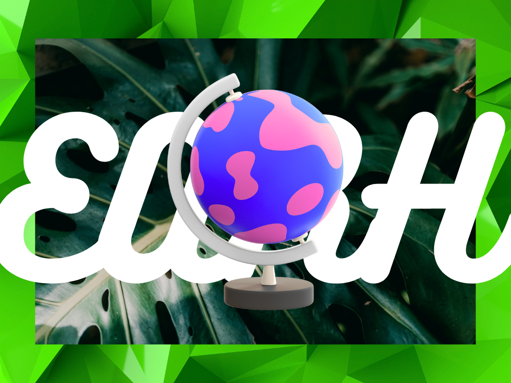
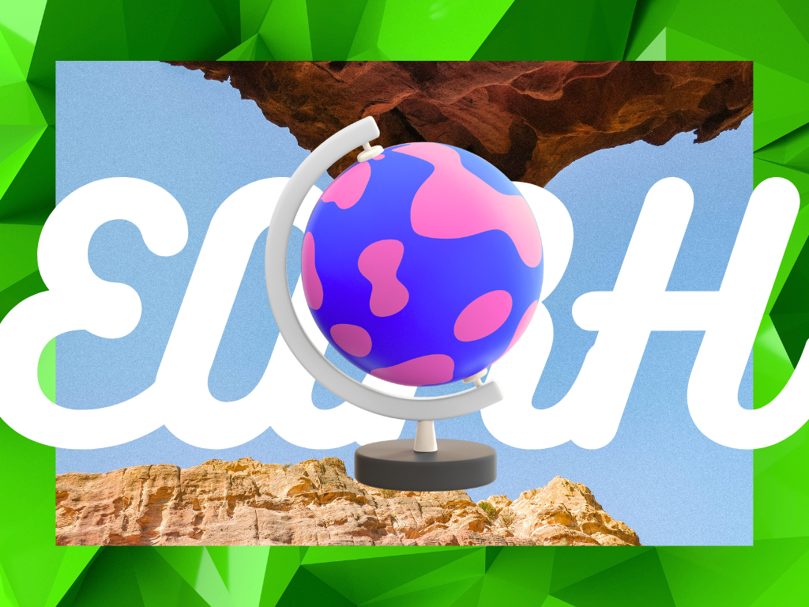
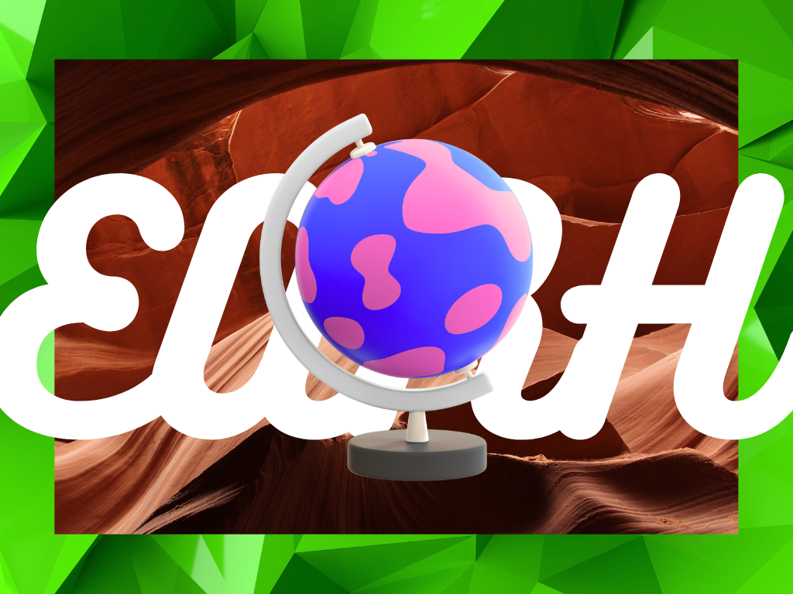

×

Geografi adalah ilmu yang mempelajari permukaan bumi, fenomena alam, lingkungan, serta interaksi antara manusia dan lingkungannya. Ilmu ini mencakup berbagai aspek, seperti bentang alam, iklim, sumber daya alam, dan pola aktivitas manusia dalam ruang dan waktu. Geografi terbagi menjadi tiga cabang utama, yaitu geografi fisik yang membahas unsur-unsur alam, geografi manusia yang meneliti hubungan manusia dengan lingkungan, serta geografi teknik yang melibatkan teknologi pemetaan dan analisis spasial. Dengan memahami konsep-konsep seperti lokasi, tempat, dan interaksi spasial, geografi membantu dalam menganalisis berbagai fenomena yang terjadi di bumi.